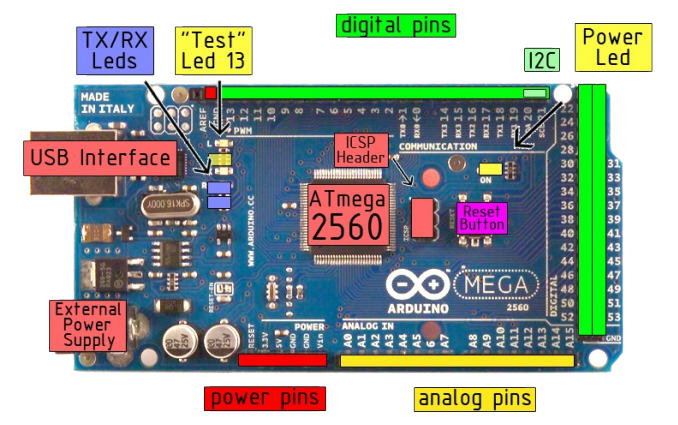
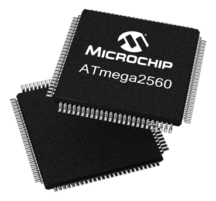
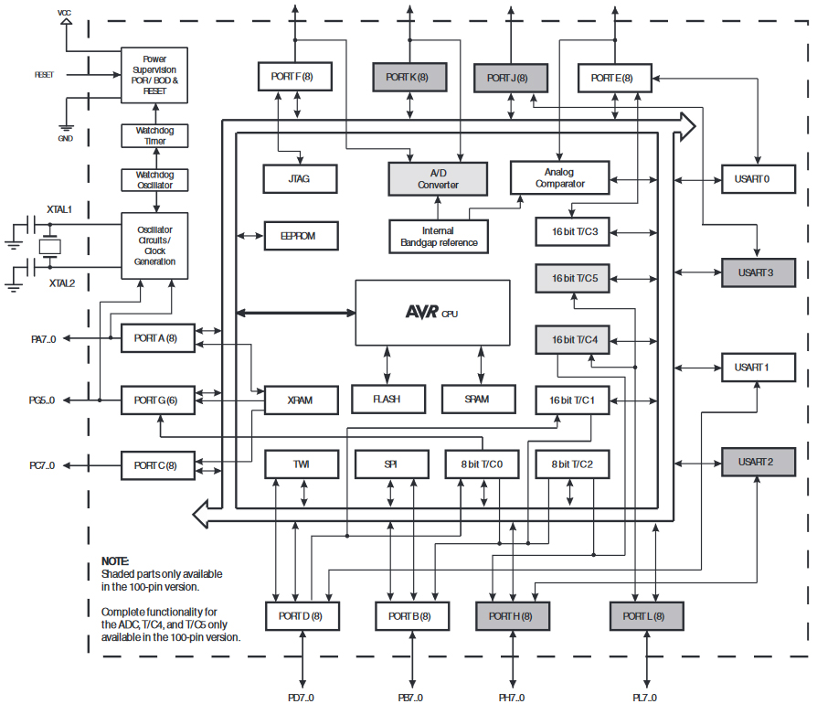

Microcontroller Platform¶
Arduino Mega 2560¶
The Arduino Mega can be purchased in a variety of places. You can find used boards on eBay for as low as $5 or $20-$30 for new branded boards. There are several off-brand replicas that can be purchased for much less.
{kind=link}
There are 54 digital input/output pins (of which 14 can be used as PWM outputs) available for use, 16 analog inputs, 4 UARTs (hardware serial ports), a 16 MHz crystal oscillator, a USB connection, a power jack, an ICSP header, and a reset button. It contains everything needed to support the microcontroller; simply connect it to a computer with a USB cable or power it with a AC-to-DC adapter or battery to get started.
Input/Output¶
- Serial: 0 (RX) and 1 (TX); Serial 1: 19 (RX) and 18 (TX); Serial 2: 17 (RX) and 16 (TX); Serial 3: 15 (RX) and 14 (TX). Used to receive (RX) and transmit (TX) TTL serial data. Pins 0 and 1 are also connected to the corresponding pins of the ATmega8U2 USB-to-TTL Serial chip.
- External Interrupts: 2 (interrupt 0), 3 (interrupt 1), 18 (interrupt 5), 19 (interrupt 4), 20 (interrupt 3), and 21 (interrupt 2). These pins can be configured to trigger an interrupt on a low value, a rising or falling edge, or a change in value.
- SPI: 50 (MISO), 51 (MOSI), 52 (SCK), 53 (SS). These pins support SPI communication, which, although provided by the underlying hardware, is not currently included in the Arduino language. The SPI pins are also broken out on the ICSP header, which is physically compatible with the Duemilanove and Diecimila.
- LED: 13. There is a built-in LED connected to digital pin 13. When the pin is HIGH value, the LED is on, when the pin is LOW, it’s off.
- AREF. Reference voltage for the analog inputs.
- Reset. Bring this line LOW to reset the microcontroller. Typically used to add a reset button to shields which block the one on the board.
Processor¶
{kind=link}
- The high-performance, low-power Microchip 8-bit AVR RISC-based microcontroller combines 256KB ISP flash memory, 8KB SRAM, 4KB EEPROM, 86 general purpose I/O lines, 32 general purpose working registers, real time counter, six flexible timer/counters with compare modes, PWM, 4 USARTs, byte oriented 2-wire serial interface, 16-channel 10-bit A/D converter, and a JTAG interface for on-chip debugging. The device achieves a throughput of 16 MIPS at 16 MHz and operates between 4.5-5.5 volts.
Block diagram:
{kind=link}
The Atmel AVR core combines a rich instruction set with 32 general purpose working registers. All the 32 registers are directly connected to the Arithmetic Logic Unit (ALU), allowing two independent registers to be accessed in one single instruction executed in one clock cycle. The resulting architecture is more code efficient while achieving throughputs up to ten times faster than conventional CISC microcontrollers.